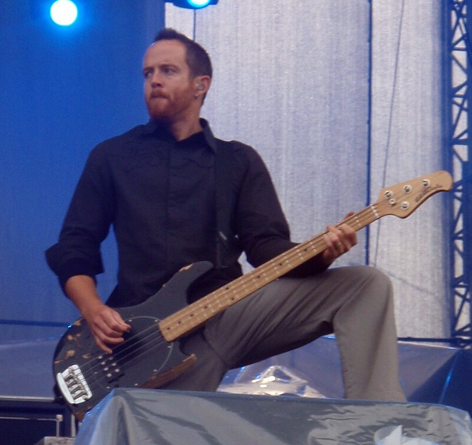

Galeria
Miembros de la Banda
Chester Bennington
Vocalista, corista, guitarrista y percusiones.
(1999-2017)
Mike Shinoda
Líder, vocalista, guitarrista, tecladista y programaciones.
(1996-Actual)
Brad Delson
Guitarrista, pianista, corista y percusiones.
(1996-Actual)

(1996-Actual)
Dave Farrell
Bajista y corista.
(1996-Actual)
Joe Hahn
Tecladista, sintetizador, sampleo y programaciones.
(1996-Actual)
Rob Bourdon
Baterista y percusionista.
(1996-Actual)


Discos